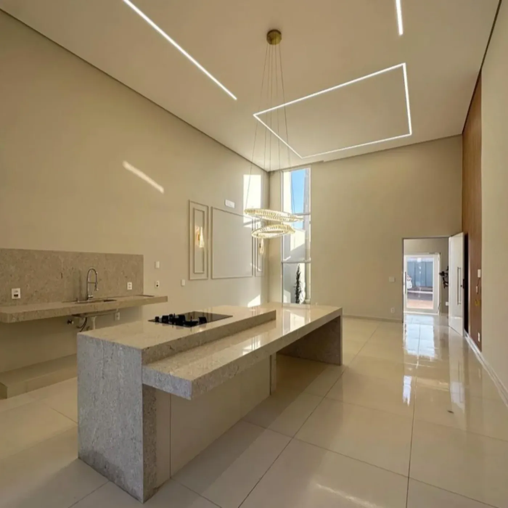
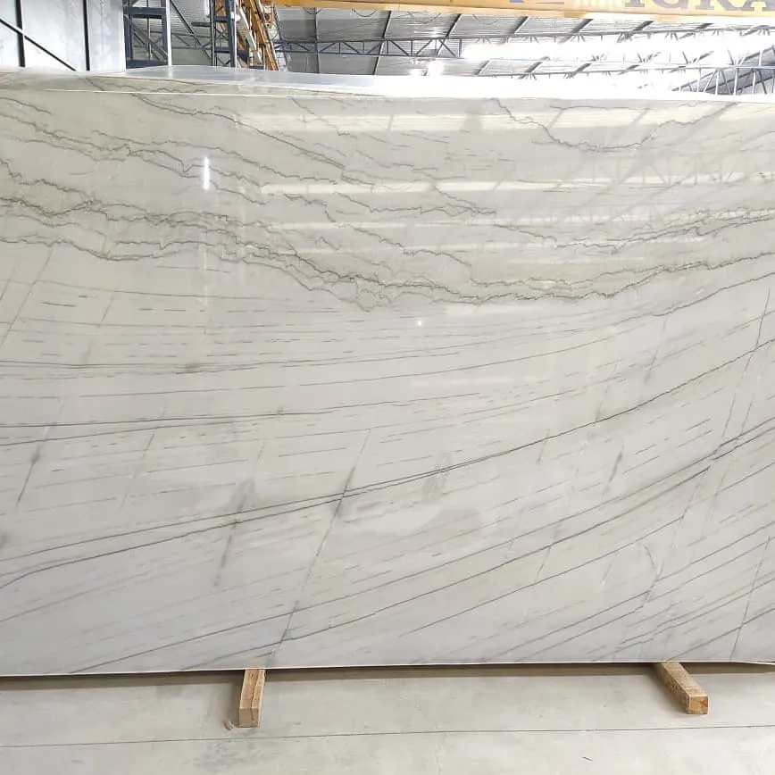
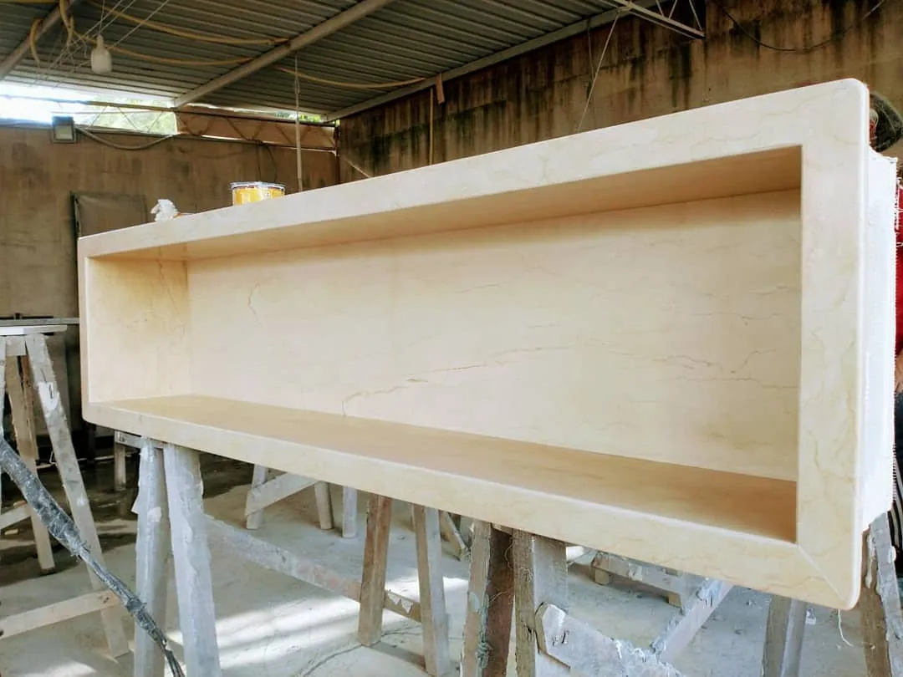
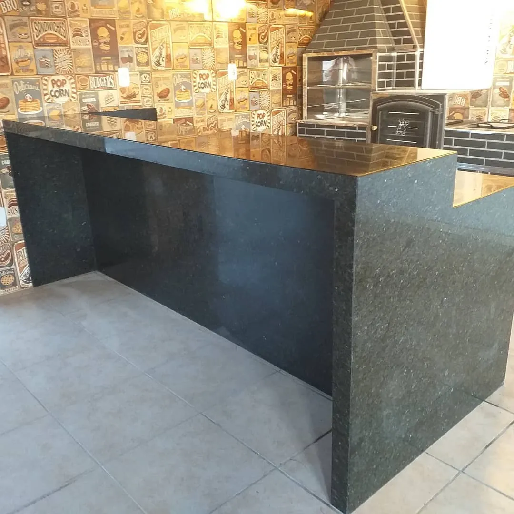
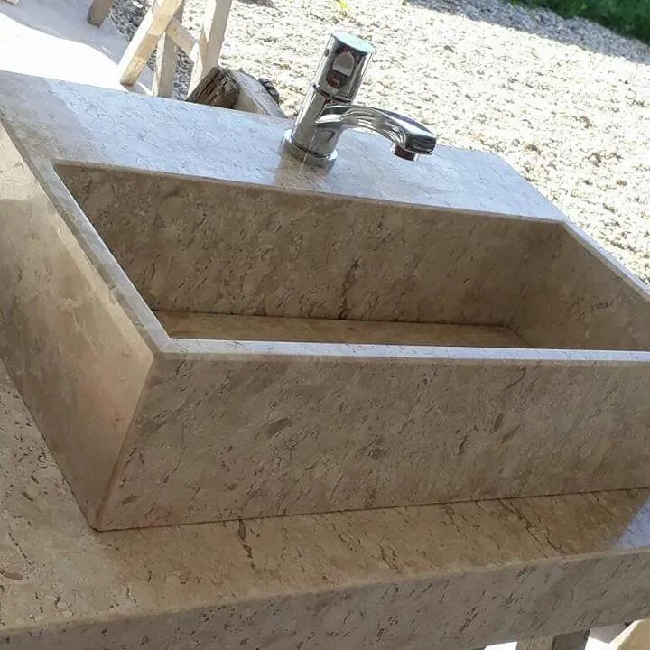
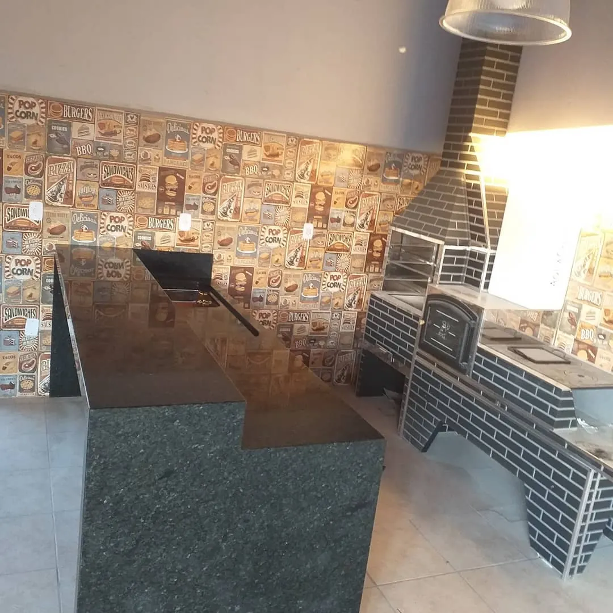
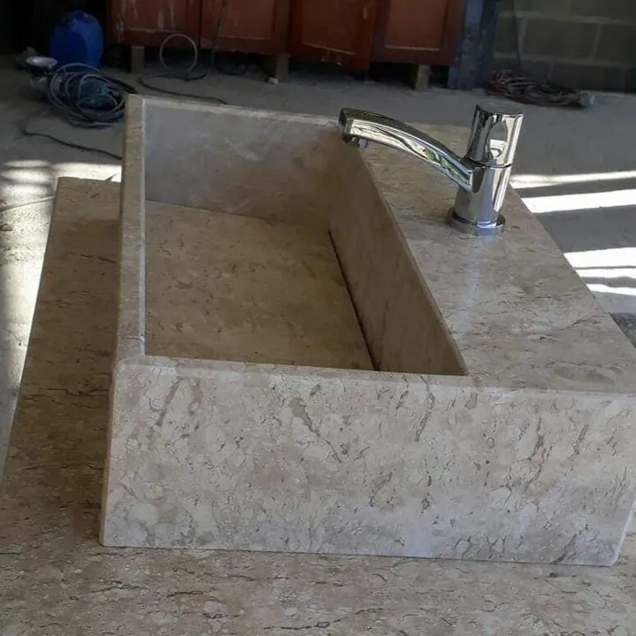
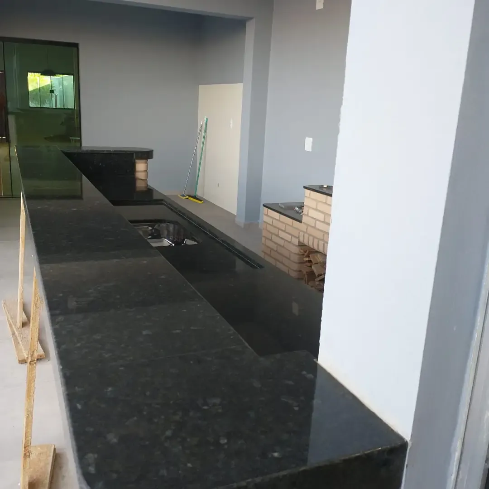
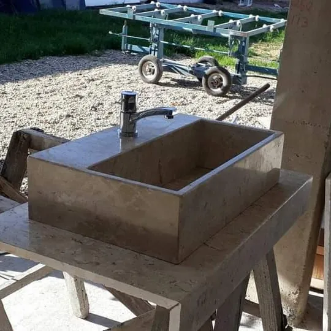

Marmoraria de qualidade perto de você Com acabamento de alto padrão
Banheiros, cozinhas e bancadas. Transformamos seu ambiente! Atendemos toda a região de Conchal, Limeira, Araras, Mogi Guaçu, entre outros.

Uma fábrica montada para obra grande, sem perder o acabamento
A Troya investiu em um barracão novo com estoque de chapas, CNC e máquina automática de 45º. É essa estrutura que garante precisão e ritmo nas obras maiores, peça por peça.


-
CNC
Corte em CNC
Corte feito em máquina, com precisão nas medidas e nos recortes de cada peça.
-
45º
Máquina automática de 45º
Emendas em meia-esquadria feitas na máquina, para bordas e saias com encontro limpo.
-
Barracão com estoque
Chapas em estoque, de granitos e mármores a materiais importados de alto padrão.
-
Instalação própria
Quem produz é quem instala. Na região, muita marmoraria não faz a instalação. A Troya faz.
Do início ao fim, tudo passa pelas nossas mãos
Você não precisa coordenar fornecedor de pedra, marmorista e instalador. Um time só cuida da sua obra.
Atendimento direto
Você fala com quem decide, com resposta rápida no WhatsApp.
Escolha da pedra
Granito, mármore ou importado, de acordo com o projeto.
Corte na CNC
Medidas e recortes feitos na máquina, sem improviso.
Acabamento
Meia-esquadria em 45º e conferência de cada borda.
Instalação
Equipe própria entrega a peça montada no lugar.
Obras que saíram das nossas mãos
Ver mais no Instagram





Uma empresa de família que cresceu cuidando do acabamento
A Troya começou com o Alisson e a esposa, Viviane. Hoje tem produção própria, atendimento no escritório e o Alisson à frente das obras maiores. O compromisso continua o mesmo: qualidade em cada peça e palavra cumprida no prazo.
Quando o cliente tem urgência, a gente prioriza e, quando possível, adianta parte do serviço na mesma semana.
Horário de atendimento para orçamentos, dúvidas e acompanhamento da sua obra.
Antes de pedir o orçamento
As perguntas que mais chegam no nosso WhatsApp. Se a sua não está aqui, é só chamar.
Tirar dúvida no WhatsAppA Troya faz a instalação?
Sim. A instalação é feita pela equipe própria da Troya. Cuidamos do serviço do início ao fim, do acabamento à instalação final.
Com quais pedras vocês trabalham?
Granitos, mármores e materiais importados de alto padrão, com chapas em estoque no nosso barracão.
Quanto custa uma bancada?
O valor depende da pedra escolhida, das medidas e do acabamento. Envie seu projeto pelo formulário ou pelo WhatsApp para receber o orçamento.
Vocês atendem a minha cidade?
Atendemos Conchal, Limeira, Araras e Mogi Guaçu. Se a sua obra é em outra cidade da região, chame no WhatsApp para confirmar.
Minha obra tem pressa. Vocês conseguem priorizar?
Sim. Quando o cliente tem urgência, damos prioridade ao serviço e, quando possível, adiantamos parte dele na mesma semana.
Qual o horário de atendimento?
Atendemos das 7h às 18h.
Peça o orçamento da sua obra
Conte o ambiente e a fase da obra. O orçamento segue direto para o nosso WhatsApp e a resposta vem rápido.
- Conchal onde fica a fábrica
- Limeira
- Araras
- Mogi Guaçu
Prefere conversar direto? Chame no WhatsApp (19) 97420-8114